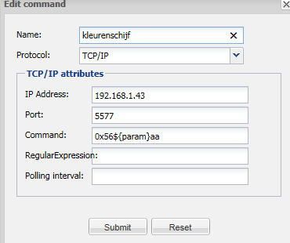

Hi all!
After a long evening trying to get my rules to work I have to ask for some guidance.
Situation:
I´m using the ColorPicker to pick a color and send the color to my Philips TV which supports Ambilight.
The ColorPicker is connected to a Custom sensor "VirtualColor" and an in-memory status command "StatusVirtualColor". For debugging I also created a label on my controller that will display the value of "VirtualColor".
The communication with the jointspace API of my TV works perfect. I can set the Ambilight to whichever color I like.
The label display the RGB Hex string picked by the ColorPicker so the virtual command stuff is working fine.
Complication:
But somehow my Drools rules don´t work whenever I try to read the value of "VirtualColor". Because the jointspace API works with seperate RGB channels, I created a function getRGBComponents() that will transform the hex color string into a JSON structure with the seperate color channels. This works perfectly well when I use the following command:
execute.command("SetAmbilight", getRGBComponents("ffff00"))
However using the value from the CustomState doesn´t work. I tried different things like $hex or $hex.toString() or even $state.getValue(), but they all failed. It looks like $hex and $state are NULL for whatever reason.
Question:
Could anyone please double check what I´m missing and point me in the right direction? Thanks a lot!
package org.openremote.controller.protocol import org.openremote.controller.model.event.*; import java.awt.Color global org.openremote.controller.statuscache.CommandFacade execute; global org.openremote.controller.statuscache.SwitchFacade switches; global org.openremote.controller.statuscache.LevelFacade levels; function String getRGBComponents(String rgb_hex) { Color c = new Color(Integer.parseInt(rgb_hex, 16)); return "{\"r\":" + c.getRed() + ",\"g\":" + c.getGreen() + ",\"b\":" + c.getBlue() + "}"; } rule "Color Picker" when $state: CustomState ( source == "VirtualColor", $hex: value ) then // execute.command("SetAmbilight", getRGBComponents("ffff00")); execute.command("SetAmbilight", getRGBComponents($hex)); end
BTW: I´m running OR on a RPi with the Java 8 JDK.
{kind=link}
{kind=link}
As far as I know OR & Drools require Java 6. Anyway, $hex.toString() should do it. Have you tried to print $hex.toString() when rule triggers? |
|
What does your boot.log say. Are there any errors from the Drools compiler? |
|
Thanks for the quick replies! @Michal: I know that Java 6 is the preferred stable release, but people had success with the Java 8 beta release as well. But you make a valid point and I will revert back to Java 6 to see if it makes any difference. @Pieter: There are two errors in the boot.log. Do they make any sense to you?
ERROR 2014-01-26 11:52:19,854 : Error in rule definition 'modeler_rules.drl' : wrong class format
java.lang.RuntimeException: wrong class format
at org.drools.commons.jci.compilers.EclipseJavaCompiler$2.findType(EclipseJavaCompiler.java:260)
at org.drools.commons.jci.compilers.EclipseJavaCompiler$2.findType(EclipseJavaCompiler.java:204)
at org.eclipse.jdt.internal.compiler.lookup.LookupEnvironment.askForType(LookupEnvironment.java:102)
at org.eclipse.jdt.internal.compiler.lookup.UnresolvedReferenceBinding.resolve(UnresolvedReferenceBinding.java:49)
at org.eclipse.jdt.internal.compiler.lookup.BinaryTypeBinding.resolveType(BinaryTypeBinding.java:122)
at org.eclipse.jdt.internal.compiler.lookup.LookupEnvironment.getTypeFromTypeSignature(LookupEnvironment.java:1188)
at org.eclipse.jdt.internal.compiler.lookup.LookupEnvironment.getTypeFromVariantTypeSignature(LookupEnvironment.java:1244)
at org.eclipse.jdt.internal.compiler.lookup.LookupEnvironment.getTypeArgumentsFromSignature(LookupEnvironment.java:1031)
at org.eclipse.jdt.internal.compiler.lookup.LookupEnvironment.getTypeFromTypeSignature(LookupEnvironment.java:1193)
at org.eclipse.jdt.internal.compiler.lookup.BinaryTypeBinding.createFields(BinaryTypeBinding.java:355)
at org.eclipse.jdt.internal.compiler.lookup.BinaryTypeBinding.cachePartsFrom(BinaryTypeBinding.java:326)
at org.eclipse.jdt.internal.compiler.lookup.LookupEnvironment.createBinaryTypeFrom(LookupEnvironment.java:640)
at org.eclipse.jdt.internal.compiler.lookup.LookupEnvironment.createBinaryTypeFrom(LookupEnvironment.java:619)
at org.eclipse.jdt.internal.compiler.Compiler.accept(Compiler.java:295)
at org.eclipse.jdt.internal.compiler.lookup.LookupEnvironment.askForType(LookupEnvironment.java:107)
at org.eclipse.jdt.internal.compiler.lookup.UnresolvedReferenceBinding.resolve(UnresolvedReferenceBinding.java:49)
at org.eclipse.jdt.internal.compiler.lookup.BinaryTypeBinding.resolveType(BinaryTypeBinding.java:122)
at org.eclipse.jdt.internal.compiler.lookup.ParameterizedTypeBinding.resolve(ParameterizedTypeBinding.java:851)
at org.eclipse.jdt.internal.compiler.lookup.BinaryTypeBinding.resolveType(BinaryTypeBinding.java:100)
at org.eclipse.jdt.internal.compiler.lookup.BinaryTypeBinding.resolveTypesFor(BinaryTypeBinding.java:1016)
at org.eclipse.jdt.internal.compiler.lookup.BinaryTypeBinding.getExactMethod(BinaryTypeBinding.java:771)
at org.eclipse.jdt.internal.compiler.lookup.Scope.findExactMethod(Scope.java:893)
at org.eclipse.jdt.internal.compiler.lookup.Scope.getMethod(Scope.java:2234)
at org.eclipse.jdt.internal.compiler.ast.MessageSend.resolveType(MessageSend.java:401)
at org.eclipse.jdt.internal.compiler.ast.MessageSend.resolveType(MessageSend.java:314)
at org.eclipse.jdt.internal.compiler.ast.Expression.resolve(Expression.java:913)
at org.eclipse.jdt.internal.compiler.ast.AbstractMethodDeclaration.resolveStatements(AbstractMethodDeclaration.java:447)
at org.eclipse.jdt.internal.compiler.ast.MethodDeclaration.resolveStatements(MethodDeclaration.java:189)
at org.eclipse.jdt.internal.compiler.ast.AbstractMethodDeclaration.resolve(AbstractMethodDeclaration.java:406)
at org.eclipse.jdt.internal.compiler.ast.TypeDeclaration.resolve(TypeDeclaration.java:1131)
at org.eclipse.jdt.internal.compiler.ast.TypeDeclaration.resolve(TypeDeclaration.java:1219)
at org.eclipse.jdt.internal.compiler.ast.CompilationUnitDeclaration.resolve(CompilationUnitDeclaration.java:528)
at org.eclipse.jdt.internal.compiler.Compiler.process(Compiler.java:759)
at org.eclipse.jdt.internal.compiler.Compiler.compile(Compiler.java:464)
at org.drools.commons.jci.compilers.EclipseJavaCompiler.compile(EclipseJavaCompiler.java:351)
at org.drools.commons.jci.compilers.AbstractJavaCompiler.compile(AbstractJavaCompiler.java:51)
at org.drools.rule.builder.dialect.java.JavaDialect.compileAll(JavaDialect.java:389)
at org.drools.compiler.DialectCompiletimeRegistry.compileAll(DialectCompiletimeRegistry.java:56)
at org.drools.compiler.PackageRegistry.compileAll(PackageRegistry.java:74)
at org.drools.compiler.PackageBuilder.compileAll(PackageBuilder.java:677)
at org.drools.compiler.PackageBuilder.addPackage(PackageBuilder.java:640)
at org.drools.compiler.PackageBuilder.addPackageFromDrl(PackageBuilder.java:266)
at org.drools.compiler.PackageBuilder.addKnowledgeResource(PackageBuilder.java:458)
at org.drools.builder.impl.KnowledgeBuilderImpl.add(KnowledgeBuilderImpl.java:28)
at org.openremote.controller.statuscache.rules.RuleEngine.getValidKnowledgePackages(RuleEngine.java:498)
at org.openremote.controller.statuscache.rules.RuleEngine.start(RuleEngine.java:253)
at org.openremote.controller.statuscache.EventProcessorChain.start(EventProcessorChain.java:112)
at org.openremote.controller.statuscache.StatusCache.start(StatusCache.java:120)
at org.openremote.controller.deployer.Version20ModelBuilder.buildSensorModel(Version20ModelBuilder.java:659)
at org.openremote.controller.deployer.Version20ModelBuilder.build(Version20ModelBuilder.java:557)
at org.openremote.controller.deployer.AbstractModelBuilder.buildModel(AbstractModelBuilder.java:154)
at org.openremote.controller.service.Deployer.startup(Deployer.java:858)
at org.openremote.controller.service.Deployer.softRestart(Deployer.java:440)
at org.openremote.controller.service.Deployer$ControllerDefinitionWatch.run(Deployer.java:1324)
at java.lang.Thread.run(Thread.java:744)
Caused by: org.eclipse.jdt.internal.compiler.classfmt.ClassFormatException
at org.eclipse.jdt.internal.compiler.classfmt.ClassFileReader.<init>(ClassFileReader.java:372)
at org.drools.commons.jci.compilers.EclipseJavaCompiler$2.findType(EclipseJavaCompiler.java:254)
... 54 more
ERROR 2014-01-26 11:52:19,889 : Cannot start event processor 'Drools Rule Engine' : java.lang.ClassNotFoundException: org/openremote/controller/protocol/Rule_Color_Picker_0DefaultConsequenceInvoker
org.drools.RuntimeDroolsException: java.lang.ClassNotFoundException: org/openremote/controller/protocol/Rule_Color_Picker_0DefaultConsequenceInvoker
at org.drools.rule.JavaDialectRuntimeData.reload(JavaDialectRuntimeData.java:383)
at org.drools.rule.JavaDialectRuntimeData.onBeforeExecute(JavaDialectRuntimeData.java:139)
at org.drools.rule.DialectRuntimeRegistry.onBeforeExecute(DialectRuntimeRegistry.java:132)
at org.drools.compiler.PackageBuilder.getPackages(PackageBuilder.java:1212)
at org.drools.builder.impl.KnowledgeBuilderImpl.getKnowledgePackages(KnowledgeBuilderImpl.java:42)
at org.drools.builder.impl.KnowledgeBuilderImpl.newKnowledgeBase(KnowledgeBuilderImpl.java:61)
at org.openremote.controller.statuscache.rules.RuleEngine.getValidKnowledgePackages(RuleEngine.java:532)
at org.openremote.controller.statuscache.rules.RuleEngine.start(RuleEngine.java:253)
at org.openremote.controller.statuscache.EventProcessorChain.start(EventProcessorChain.java:112)
at org.openremote.controller.statuscache.StatusCache.start(StatusCache.java:120)
at org.openremote.controller.deployer.Version20ModelBuilder.buildSensorModel(Version20ModelBuilder.java:659)
at org.openremote.controller.deployer.Version20ModelBuilder.build(Version20ModelBuilder.java:557)
at org.openremote.controller.deployer.AbstractModelBuilder.buildModel(AbstractModelBuilder.java:154)
at org.openremote.controller.service.Deployer.startup(Deployer.java:858)
at org.openremote.controller.service.Deployer.softRestart(Deployer.java:440)
at org.openremote.controller.service.Deployer$ControllerDefinitionWatch.run(Deployer.java:1324)
at java.lang.Thread.run(Thread.java:744)
Caused by: java.lang.ClassNotFoundException: org/openremote/controller/protocol/Rule_Color_Picker_0DefaultConsequenceInvoker
at java.lang.Class.forName0(Native Method)
at java.lang.Class.forName(Class.java:340)
at org.drools.rule.DroolsCompositeClassLoader.loadClass(DroolsCompositeClassLoader.java:91)
at java.lang.ClassLoader.loadClass(ClassLoader.java:357)
at org.drools.rule.JavaDialectRuntimeData.wire(JavaDialectRuntimeData.java:312)
at org.drools.rule.JavaDialectRuntimeData.reload(JavaDialectRuntimeData.java:379)
... 16 more
INFO 2014-01-26 11:52:19,937 : Initialized event processor : RRD4J Data Logger
INFO 2014-01-26 11:52:19,938 : Initialized event processor : EmonCMS Data Logger
INFO 2014-01-26 11:52:19,970 : Registered sensor : Range Sensor (Name = 'Color', ID = '3696827', Min: 0, Max: 10)
INFO 2014-01-26 11:52:19,972 : Registered sensor : Sensor (Name = 'Label', ID = '3698305', State Mappings: {})
INFO 2014-01-26 11:52:19,976 : Registered sensor : Sensor (Name = 'VirtualColor', ID = '3698086', State Mappings: {})
INFO 2014-01-26 11:52:19,985 : Startup complete.
|
|
The log shows that Drools event processor does not start. ERROR 2014-01-26 11:52:19,854 : Error in rule definition 'modeler_rules.drl' : wrong class format java.lang.RuntimeException: wrong class format shows that the class format is invalid. I would still assume that you need Java 6. |
The OpenRemote 2.0 How To - Install Controller on Raspberry Pi recommends Java 6 If I understood discussions correctly, an upgrade even to the next Drools release would cure this Java version misery. |
|
Thanks for the help guys. It was the Java version that was causing the problem. I was running OpenRemote together with a NAS functionality that was already running on a Hard Float Raspbian image. That's why I opted to try the JAVA 8 JDK first. It took some time to find a Debian Soft Float image, but it is up and running. First I got the error that Object was not a String, but that was easily fixed by adding .toString(). This proves that JDK 8 is not suitable for OpenRemote and we simply cannot run on Hard Float yet with the current out dated Drools version. I really hope someone can update this so we can leave the Soft Float behind. If there is anything I can do to help, please let me know. |
|
On 2013-04-22 Juha said a.o. "Drools library upgrade which is a relatively minor update" |
|
hello ive managed to get the wifi370 rgb controller working: https://github.com/pimatic/pimatic/issues/348 but now i want to use the colourpicker to set the colour instead of fixed colours  rule "Color Picker" a label attached to the colourpicker works so i can see the value i has to send, does someone know a solution to get it work? the value of the colourpicker has to be send between the begin and end command as $param (see picture) |